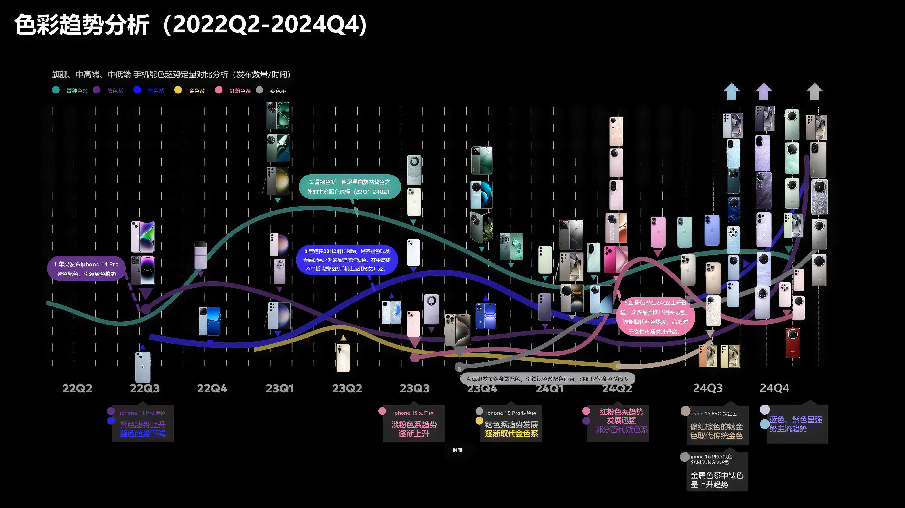

按品牌持续填充
品牌 → 产品线 → 产品，建立全行业新品的连续记录，而非一次性调研。

Working Method · Evidence 01
把持续追踪变成可复用的设计判断。
01 · Introduction
我通过持续的 CMF 竞品追踪与趋势分析，并用多类维度——价位段、品牌、产品航道——识别色彩、材质、工艺、纹理及感知价值的变化，再将这些信号转化为可执行的产品设计判断。
“先保持趋势敏锐度，再真实助力设计决策提效”
02 · Competitive Intelligence
我与另外三名设计师共同搭建、维护并向全部门分享 CMF 竞品库。线上库负责形成可检索、可比较的证据链；线下库沉淀供应商新工艺样品，以及外纹理、内纹理等实体纹理册。

01 · Always-on input
品牌 → 产品线 → 产品，建立全行业新品的连续记录，而非一次性调研。
价位、出货市场、厚度、材料、工艺、配色与纹理类型进入同一分析框架。
总库承担“观察层”：保留原始新品信号，为季度提炼与品牌策略判断提供共同底座。
02 · Quarterly synthesis
按品牌分工完成高 / 中 / 低价位段的色彩、材料与工艺、纹理总结。左右保持同档对齐，让变化先于细节被看见。
03 · Biannual strategy read
把连续两季的产品证据按品牌重新聚合，观察 CMF 设计特点、关键词与迭代方向。H1 与 H2 分开阅读，保留时间变化。


03 · How I use it
持续追踪品牌、市场、价位段与 CMF 变化。
识别高频趋势、区域差异、竞品策略与空白机会。
转成配色、材质、工艺、产品组合或营销色决策。
04 · Applied in Projects
竞品库不是报告终点。它在具体项目中承担方向校准、机会识别与决策提速。
Project 01
配色 / 工艺 / 纹理趋势识别，形成三档产品 12 配色矩阵规划，并支持主力高档产品类悬浮纹理开发。


Project 03 · A200s Series
捕捉钛色退场与高明度金色回归；交叉检验出货市场信息，识别印度高明度、中高饱和度蓝色审美上升，最终导入两款新增营销色。
Project 04
把竞品与趋势判断转译为明确的探索边界，让生成式工具服务于方向验证，而不是替代策略。